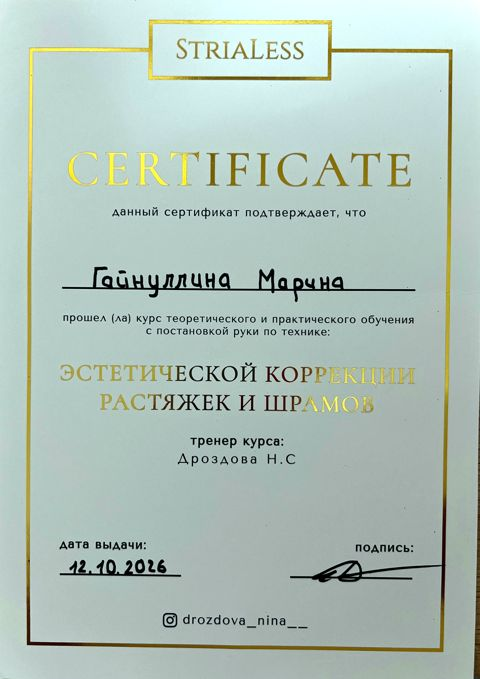
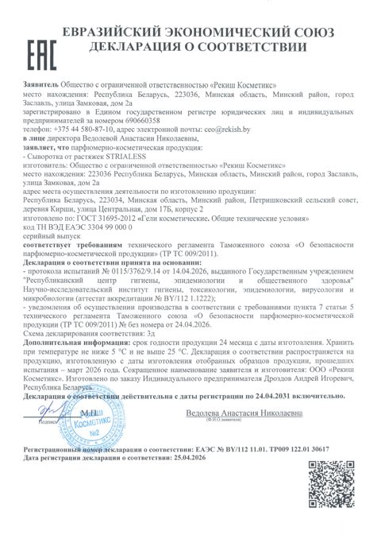

Документы
Мой сертификат об обучении и документы на сыворотку, с которой я работаю.

обучение
Сертификат
Курс теоретического и практического обучения эстетической коррекции растяжек и шрамов по технике StriaLess. Тренер — Н. С. Дроздова, выдан 12.10.2026.

сыворотка
Состав StriaLess
ПДРН, трегалоза, гиалуроновая и молочная кислоты, витамин C, пантенол, аллантоин и экстракты центеллы, алоэ и зелёного чая — что делает каждый компонент.
Нажмите на документ, чтобы открыть его в полном размере.